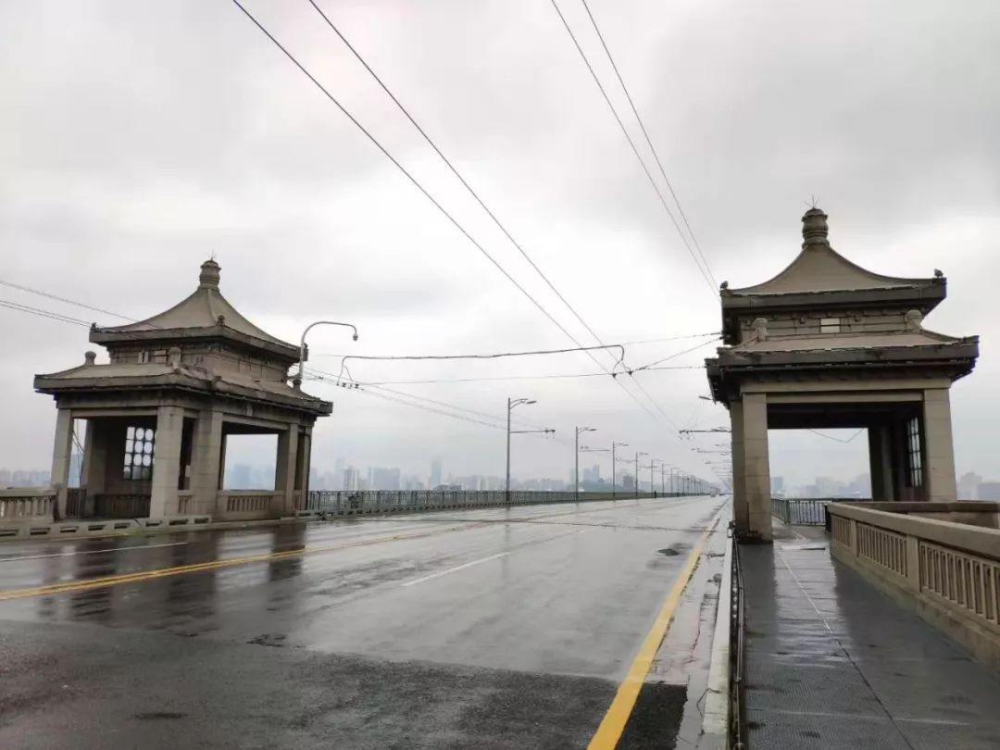

湖北抗击肺炎疫情这一周：防控措施如何升级
原文链接 备份链接 【财新网】（记者 张帆）1月24日中午12点左右，作为疫情爆发中心地的湖北省姗姗启动重大突发公共卫生事件一级响应。而在此之前，从1月23日起，已有浙江、广东、湖南、北京、上海、天津、安徽、重庆、四川等多个省份启动一级 …
17 年前的那场公共卫生危机，未能及时公开疫情成为事后被诟病最多的问题之一，也成为中国疾病防控系统以及政府信息公开等许多方面的重要转折点。
而多年后，越来越多的互联网官方渠道成为了重大事件的定海神针，「官宣」被普遍接纳，民众似乎不再容易被谣言所左右。
但关于「肺炎疫情」的第一次通报，仍然落后于网上流言。2019 年 12 月末，SARS 「复燃」的消息通过群截图在微博、微信等社交平台散播开来，随后落款清晰的红头文件被主流媒体注意到。
12 月 31 日，武汉市卫健委对外通报疫情，称之为「不明原因肺炎」。27 例病例大多指向位于紧邻武汉汉口火车站的华南海鲜城。但对于疑似 SARS 病毒的病原体并未明确说明。
这一消息也被同步提交给了世界卫生组织，港澳地区和国外媒体都纷纷报道这一消息。
彼时，在上海工作的武汉人陈秘（化名）回忆，这条官方通报虽然证实了网上的部分传言，但丝毫没有给她的春节返乡心情造成影响。
周围唯一的质疑来自陈秘的一中学同学，「病毒是SARS 的兄弟姐妹，目前发展情况不明了，如果（后续发展）不好的话，过年你就别回武汉了。」
陈秘的这位同学就职的公司属于武汉疾控系统的第三方机构，没多久同学群里大家戏称他是「预言家」。
陈秘当时的第一反应是，不回武汉，一个人在上海过年太无聊了吧。
与此同时，常驻武汉的某国内主流媒体记者凌桦（化名）很快赶到了华南海鲜批发市场，令他惊讶的是，市场仍在营业，记者们还发现了野生动物贩卖的痕迹。

12月31日，仍有部分商户营业的华南海鲜批发市场
图源：受访者供图
SARS 当年的中间宿主正是野生市场的果子狸，很快，包括凌桦所在的多家媒体很快报道了此事。1 月 1 日，华南海鲜城宣布休市，事后很多商户表示通知来得十分突然。
另一条日后被人们翻出的消息是，华南海鲜城休市的同一天，8 名因散布不明原因肺炎信息的网络发布者被警方传唤。
与之相对应的是，在 2002 年 12 月，即便没有任何官方通告，关于「一种怪病」的民间传言，早已经在广东河源、中山、广州的民间传得沸沸扬扬，白醋、板蓝根被抢购至脱销，人们自发地产生了趋利避害的各种行为。
《谣言：世界最古老的传媒》一书中称：谣言之所以存在，不仅因为它拥有具备时效性的信息价值，是对单一信息源的有效补充，而且它揭露秘密，提出假设，迫使相关方开口说话。
在这一次的疫情初期，谣言随着「 8 名散布谣言者被依法查处」的动作予以警示，而适当的政府信息公开又让人们相信疫情是「可防可控」的。
随着媒体的被迫撤离，舆情在 1 月 3 日之后趋于平淡。武汉卫健委的疫情通报成为唯一的信息源。
1 月 3 日和 5 日，武汉卫健委又陆续公布了疫情通报，除了数字从 27 例不断攀升至 44 例、59 例，「未发现明显人传人现象」、「未发现医务人员感染」等词汇也某种程度上消除了人们的恐慌，认为这场疫情并未蔓延。
偶尔治愈梳理发现，最早的官方措施来自于中国澳门。自 1 月 1 日，澳门卫生局人员开始对来自武汉航班的航班乘客逐一用测温枪筛查。
港澳两地的民众在 SARS 的阴影下，开始抢购口罩和消毒产品。但与此同时，华南海鲜城周边的居民和商户却毫无察觉。
界面媒体采访了当时较早发病的一位海鲜市场摊贩郑先生，其妻子黄女士表示：「我跟他住一起（医院）都没有要求我检查，说明这个不传染，也算是好事情。」
事后，人们发现 1 月 5 日成了疫情披露的重要拐点，武汉进入两会时间，原本两日一通报的疫情一连 5 日未见更新，直到 1 月 11 日才恢复。
注意力被转移的一部分原因来自于科学界的发现。1 月7 日，中国科学家宣布新型冠状病毒是此次肺炎疫情的病原体，速度之快令全世界瞩目。
这一成果再次让人们相信，即便是 SARS 重返，人们也不会像 17 年前应对 SARS 一样手足无措。
彼时，偶尔治愈在武汉走访时，华南海鲜城外仍然聚集着大量的商贩，人们讨论着休市对生意的影响，以及何时能够恢复。
一名叼着烟的市民说自己是关闭的海鲜城西区二楼的眼镜城商户，下楼来看看热闹，并不认识被感染的商户，平日的交集大约就是上下楼的经过以及上厕所时的照面。
但引起偶尔治愈注意的原因是，这位市民并没有戴口罩，也丝毫看不出对这种尚不明确的肺炎疫情的恐惧。
甚至，当时与休市海鲜城一路之隔的东区里还有一个正在营业的生鲜市场八古墩，似乎并未受到任何影响。
这样的气氛，让来到武汉的所有人都很难感受到这里发生了不为人知的大事，甚至更像是一场已结束的战役的尾声。
而武汉官方的「尚无明确的人传人」口径第一次改为「不排除人传人」是在 1 月 15 日武汉市卫健委官网的一份「新型冠状病毒的肺炎疫情问答知识」。
该官网发布内容还披露，为加强溯源工作，在市场内采集环境标本进行检测。「目前，检测结果发现部分样本新型冠状病毒阳性。」
在此之前，路透社援引世界卫生组织人士消息称，武汉的新型冠状病毒可能出现有限的人际传播，不过这一说法随后被世卫组织在回复财新记者时予以一定否认，「并没有证据表明该冠状病毒会有限度人传人。」
据财新网 1 月 14 日报道，世卫组织专家也并不排除此可能，他们的理由是大多数呼吸道病毒都能人传人，只是传染性强弱程度不一。
更大的质疑源于境外不断报道的确诊病例。由于中国科学家向世界公布了新型冠状病毒的基因序列，日本、泰国都陆续证实，已有来自武汉的人员在其境内被发现确诊。
而另一边，在 1 月 11 日至 1 月 15 日的武汉通报中，累计病例始终保持在 41 例，人们不禁开始讨论，「病毒都出国了，却为何还没出省。」
这些民间声音给已然开始的春运高峰期蒙上阴影。
与此同时，一些专家依然认为，被命名为 2019-nCov 的新型冠状病毒相比 SARS 在传染性和致死率方面更为温和，但另一方面，对于这种人类新发现的第七种冠状病毒仍有更多未知。
凤凰卫视《非典十年祭》专题中曾这样总结，作为一种烈性传染病，SARS 在早期人们对其知晓不多的情况下，仍然得到的结论是「未知、并不凶猛，经过一段时间治疗后得到缓解。」
直到数月后，SARS 从南到北，让北京经历换帅、新建小汤山医院等一系列事件后的疫情后半段，科学家才逐渐确认其为冠状病毒，并找到果子狸作为其中间宿主。
尽管 SARS 的面目逐渐清晰，但此时人们才惊觉：「我们对其所有的认识，是以生命作为代价的。」
23 日，武汉封城。对应病毒源头的忽略，抗击举措的滞后，也越发「明晰」起来。
分别作为第一批赶赴武汉志愿的国家卫健委高级专家组成员和病毒学研究领域专家，曾光和管轶的观点差异明显。曾光认为，武汉封城后，初步效果 5 至 10 天将见分晓。春运结束前，疫情上升势头会得到一定程度遏制，此后即可择机进入「围歼战」。
香港大学新发传染性疾病国家重点实验室主任管轶则忧虑封城效果，因为此举已错过「黄金防控期」。在财新网的采访中，管轶解释道，21 日起，武汉街头人流即明显减少；而此前出城人群或已感染且尚在潜伏期等可能性，导致「移动病毒」的存在风险。
实地调研后，管轶直言，直到 22 日，武汉依旧「不设防」。
从风险治理的角度，中国人民大学公共管理学院教授、国发院研究员刘鹏认为，这本质上是一个社会风险链的逐步形成和强化过程。
1 月 25 日的最新数据显示：武汉外，湖北 11 市确诊新型冠状病毒肺炎病例数为 434。黄冈及孝感相对严重，分别为 122 和 55 。
国际社会风险治理的经验总结，应对不确定性的社会风险强度和程序上主要有两种原则：防范原则（preventive principle）和预防原则（precautionary principle）。
防范原则强调的是政府和社会与对于风险治理的行为必须以科学为依据，在科学上有充分证据证明因果关系之后才能采取行动，即「宁可漏，不可错」。
不过随着人类面临越来越多短期内无法在科学上确定因果关系的风险，预防原则应运而生。
具体说：由于科学对于一些未知风险的因果关系证明具有局限性，或者需要比较长期的时间和投入，因此在特定时期基于一些相关性的证据就可以采取行动，即「宁可错，不可漏」。
实践表明，预防原则在应对涉及到关系到健康、安全与环境等人类社会根本利益的新型未知风险时，要比防范原则更为适用和有效。
而具体到武汉疫情的防控问题上来看，武汉铁路局曾预计春运（1 月 10 日至 2 月 18 日）发送旅客 2439 万人次。
据百度地图慧眼监测，封城前，自武汉出发的人群，部分前往河南、湖南、重庆等地外，多数集中在湖北省内，尤以黄冈、孝感为主。
1 月 25 日的最新数据显示：武汉外，湖北 11 市确诊新型冠状病毒肺炎病例数为 434。黄冈及孝感相对严重，分别为 122 和 55 。
一位汉口站工作人员对偶尔治愈表示，虽 1 月 14 日起，武汉「三站一场」开始红外测温，但现场缺乏卫生防疫人员指导监督，「通报或可以让人安心，但具体落地措施却无人盯控」。
巨大客流量中，车站一线工作人员直至 20 日才配发口罩。
 1月19日，武汉百步亭社区的万家宴引争议 资料图
1月19日，武汉百步亭社区的万家宴引争议 资料图
武汉的这种以防范原则为基础的不设防，某种程度上成为其他城市的疫情防控带来隐患。
支援武汉的上海市医疗救治专家组组长、华山医院感染科主任张文宏最新发文称，现在的主要困难，就在于其他各省的输入性病例。
「当某一个城市的不明原因肺炎中出现冠状病毒，而且源头不清的时候，预示着该城市已经失去了初期防控的黄金窗口，可能要出现进入二代病例传播的持久战阶段。」
而造成这样的结果，张文宏回溯认为，很快出现的一系列聚集性发病案例没有受到重视，是武汉之殇的关键节点。一些关键细节值得反思。1 月 10 日，偶尔治愈走访发现，当时集中收治病患的金银潭医院，既已出现家住武昌，中途短暂停留孝感，且无华南海鲜市场（汉口江汉区）直接接触史的相关病例。
回顾推测，疫情在当时或已开始扩散，且存在人传人的可能。
另据财新网报道，同在 1 月 10 日，无华南海鲜市场接触史的武汉同济医院急诊科医生，出现感染症状，后转入金银潭医院治疗。
然而，武汉卫健委在 1 月 11 日通报称，未发现医务人员感染，未发现明确的人传人证据。
直到1月20日，国家卫健委高级专家组组长钟南山对镜头证实，肯定存在人传人且医务人员感染的情况，舆论哗然。
此外，多方信源证实， 1 传 14 「超级传播者」事件医院——武汉协和医院相关医生证实，20 日前，既无相关部门关于疫情的警示，更被要求不可私下议论。
医务人员外，部分病患家属亦曾收到特殊「提醒」。
一位在武汉市中心医院（后湖院区）排队 4 天后，于 1 月 7 日转院至金银潭医院的病患家属对偶尔治愈表示，当时接到转院通知时，即被警告不得接受媒体采访和外界问询。
其中一个关键原因是，当时至少武汉中心医院内，就已「聚集」很多疑似病例，正在等待转院或其他安排，该病患家属说道。
1 月 20 日，武汉成立新型冠状病毒疫情防控指挥部。直至 23 日，金银潭医院及武汉市肺科医院外，24 家医院完成临时改造，作为发热门诊收治医院，疫情中的武汉医院联动「联合诊疗」，方真正成型。
但各医院的防护物资短缺，已让救治陷入困境。
一名被感染的武汉三甲医院医生，经《中国新闻周刊》详述道，自我隔离治疗后，发现封城状态下，上级部门又禁止各医院私自接受款物捐赠。「就像一个战士，没有枪，还要去上战场」。
为解燃眉之急，武汉市各医院决定「越过武汉市卫健委」，集体发布接受社会捐赠公告。至 1 月 25 日，丁香园核实汇总的湖北省防护物资求助医院达 44 家。
另一方面，外界看来破釜成舟的封城之举，却很快暴露出准备不足的弊端。公共交通停摆，医护人员出勤受阻，人们不得不自发组成志愿车队。
据悉，逾 4000 辆私家车志愿报名接送医护人员，但仅隔一天之后，武汉城区再次禁止私家车禁行，一些医护人员出行再次陷入困境。
春节除夕夜，医院的「自救」行动网络热度几乎超过春晚，彻底刺痛社会关注。
1 月 25 日，党中央成立由中央政治局常务委员会领导的应对疫情工作领导小组；国家卫健委组建 6 支共 1230 人的医疗救治队驰援武汉，同时召集 6 支后备梯队随时待命；武汉市防控指挥部举行调度会，决定火神山医院外，半月内再建雷神山医院。
商务部则开始统筹协调安徽、江西、河南、湖南、重庆等地商务主管部门，协调落实口罩等货源 200 万只；工信部向武汉紧急调用防护服 1.4 万件及医用手套 11 万双的同时，协调落实口罩货源 300 万只，防护服货源 10 万件，护目镜货源 2180 副。
此外，军队医院及各地医务人员的赴汉相助，正持续进行。
似乎，自上而下的效率联动，亦如武汉市长周先旺对疫情的评价，突然且迅猛。

封城后，空无一人的武汉长江大桥
图源：受访者供图
终于，此前一直被隐藏或被隐忍的情绪，瞬间爆发。
1 月 23 日，武汉市第五医院进行住院病人清退，确诊患者收治的过程中，急诊科主任郑先念因物资短缺和心理重压，在与医院沟通时，近乎崩溃至哭嚎。
据健康时报报道，当日武汉市第五医院因住院协调等问题引起冲突。而诸如此类的紧急和无奈，正难以控制地发生在武汉，以及其周边黄冈、孝感等县市。
继 20 日、23 日、24 日连续召开国务院应对新型冠状病毒感染的肺炎疫情联防联控工作机制会议后，国务院副总理孙春兰表态道：当前疫情传播还没有阻断，呈扩散态势。各地各有关部门要增强责任感紧迫感，采取更加严格、更有针对性的举措。
张文宏则强调，目前举全国之力支援武汉后，武汉以外其他城市管理层，现在须面临的，正是武汉 2019 年 12 月底同样的问题。
武汉外，湖北疫情最为严重的黄冈，于 1 月 25 日开始对大别山区域医疗中心进行紧急改造，以确保黄冈版小汤山医院在 27 日即可投入使用。
偶尔治愈自孝感市第一人民医院了解到，目前孝感医疗防护资源匮乏，急需援助。各医院外，孝感防控指挥部则配合发布通告，以确保捐赠物资的接受调配。
湖北省外，各地的防控措施则同步升级。
在春节返乡人员与尤为集中的河南，严苛落实到镇村的「硬核」举措，引发热议不断。
如此情形下，针对目前全国性的危情深陷态势，张文宏援引知名病毒学家，中国工程院院士闻玉梅所言提醒道：早期武汉疫情是盲目乐观，现在则过度恐慌，反而不能科学对待眼前的疫情。
为此，张文宏建议，预期在武汉外的防疫工作上，必须严格做好病例筛查，迅速确诊，精确分检。「该隔离隔离，该回家回家。」如果病例数较多，超出当地医院的承受能力，那么按照轻症病例可以居家隔离的策略，也能达到阻止病例扩散的要求。
身在疫情前线的武汉大学医学部传染病学教授桂希恩，则更为积极地表示，新型冠状病毒的完全控制应快于 SARS，预计正月十五前，武汉疫情可能将出现回落。
不过，经历过此前凡种，专家意见中的乐观「回流」，已很难引起民众信任。
与此同时，各地问责或已开始自下而上进行。
1 月 25 日，湖南省岳阳市南湖新区卫健局局长唐虎，因防控信息报送延时而被停职。为武汉疫情中，首个被惩处的地方官员。
原文链接 备份链接 【财新网】（记者 张帆）1月24日中午12点左右，作为疫情爆发中心地的湖北省姗姗启动重大突发公共卫生事件一级响应。而在此之前，从1月23日起，已有浙江、广东、湖南、北京、上海、天津、安徽、重庆、四川等多个省份启动一级 …
原文链接 备份链接 武汉各大医院发热门诊的紧张态势已有一周，七家定点医院启动才两天已被压到极限。 武汉不缺顶级医院，不缺顶级专家，不缺顶级医疗能力，缺的是公共卫生防控能力、行政效率和疫情处理流程。 在患者和大医疗机构之间，未见到基层 …
原文链接 备份链接 【财新网】（记者 黄蕙昭）一则半夜发布的“封城”通告惊动全国，也拉开武汉肺炎防疫之战新势态。1月23日凌晨两点，武汉市新型冠状病毒感染的肺炎疫情防控指挥部通报宣布，今日10时起，武汉公交、地铁、轮渡、长途客运暂停运 …
原文链接 备份链接 武汉卫健委最新通报，“不明原因肺炎”已排除SARS和MERS，但病原体仍未明确。 武汉患者已增至59例，重症7例，均在接受隔离治疗，无死亡病例。 香港特区等地加强了对来自武汉人员的监测，香港每日公布疑似案例，最新 …
原文链接 备份链接 武汉抗“疫”27日考：追忆那些被贻误的宝贵时机 2020-01-26 20:28 作者：张家振 来源：中国经营网 本报记者 张家振 武汉报道 （武汉抗“疫”一线的逆行者。） 1月24日，除夕夜。39岁的张琴（化名）和丈 …